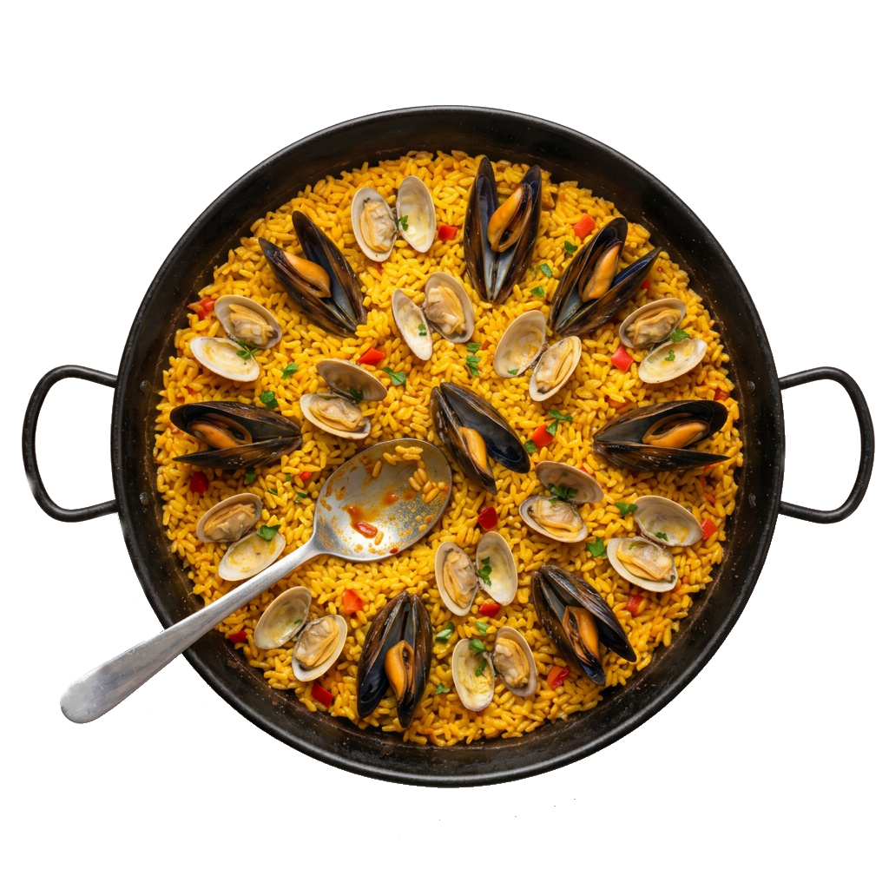
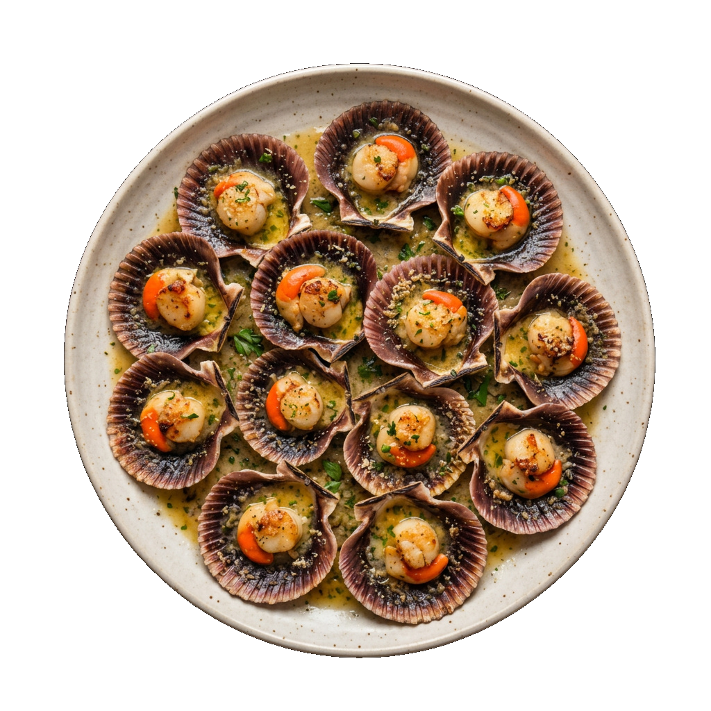

Nuestra Cocina
Sabores de Galicia
Producto fresco del Atlántico y la tierra gallega, elaborado con recetas que honran la tradición.

Pulpo á Feira
Nuestro pulpo, tierno y sabroso, servido sobre cachelos con pimentón de la Vera y aceite de oliva virgen. Un clásico gallego que preparamos con mimo.

Arroces Gallegos
Nuestra especialidad estrella. Arroces caldosos y secos con marisco fresco del día, bogavante, almejas y gambas de las rías gallegas.

Codillo Asado
Codillo de cerdo asado lentamente hasta conseguir una carne jugosa que se deshace, con la piel crujiente y dorada. Un plato contundente de nuestra tierra.

Mariscos de las Rías
Zamburiñas a la plancha, almejas a la marinera, berberechos, gambas y navajas. Lo mejor del Atlántico gallego en tu mesa.